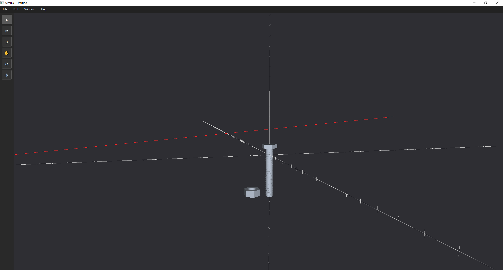

PROJECT FILE / In development
SimuO
Building a 3D engine with SimuOttawa, and growing alongside the people who build it.
Python · OpenGL · Ray casting
Where it began
I joined SimuOttawa in my first year, with little software engineering experience. Working with the club helped me understand what software engineering could make possible. Over time, I invested more effort in both the project and the people.
My contribution
I lead raytracing, optimization, and project management. The engine currently opens a 3D scene with preloaded .obj models. My implemented input work translates screen clicks into the 3D environment. Object intersection detection is the next step; lighting remains a future application.

screw.obj
model in the Python/OpenGL scene during raytracer development. Work in progress toward mouse-ray intersection testing and object selection. Select the image to view it at full size.
Building with a team
I host weekly media and engineering team meetings, spending about two hours on meetings and four hours on engineering each week.
What comes next
We are developing detection between mouse input rays and scene objects. Longer term, we plan an optimized .simuO file format and simulations involving airflow, noise, light waves, and more.
LET’S BUILD SOMETHING
Available for co-op · January 1, 2027
Seeking opportunities in software engineering, hardware / FPGA, and machine learning.